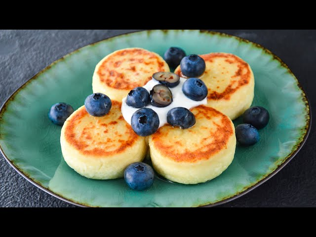

Сирники

Інгредієнти:
Творог — 300 г
Яйце — 1 шт
Борошно — 3 ст. л.
Цукор — 2 ст. л.
Приготування:
Змішати творог з яйцем, цукром і борошном.
Сформувати невеликі коржики.
Смажити на олії до золотистої скоринки.
Назад на головну